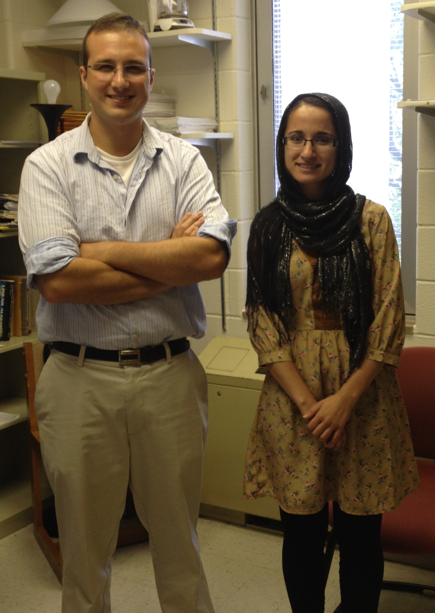

In the summer of 2013 I worked with Deelan Jalil.

Deelan spent a lot of time investigating the elementary divisors of
many classes of incidence (and other associated) matrices.
See her full report here.
In the end we focused our attention on the Smith normal form of
matrices associated to abelian Cayley graphs. These graphs and
matrices encompass a wide variety of examples. We applied results
of MacWilliams-Mann and Sin to relate the spectrum of these matrices to
their Smith normal form. In particular we were able to recover
some nice results of Bai on the n-cube and Jacobson-Niedermaier-Reiner
on Cartesian products of complete graphs. See our paper here.
Deelan gave an excellent presentation of her research to the Department
of Mathematics and Statistics at James Madison University. You
can watch her talk here.
(slides)
Back to my homepage